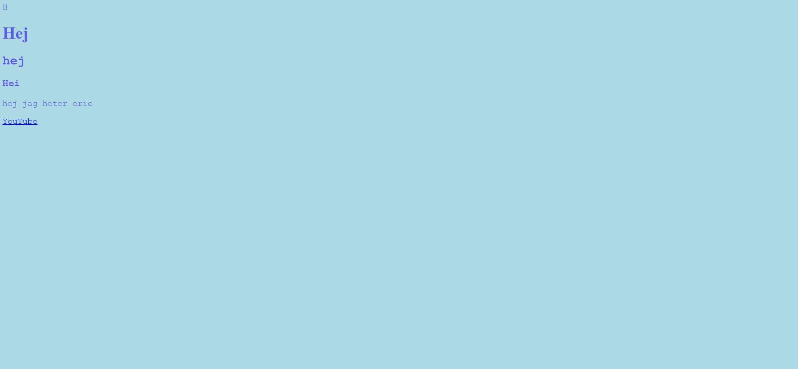
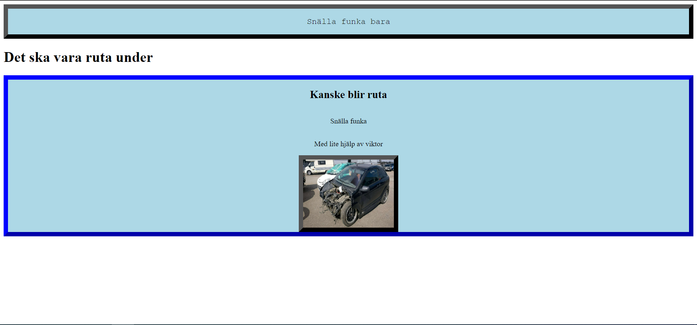
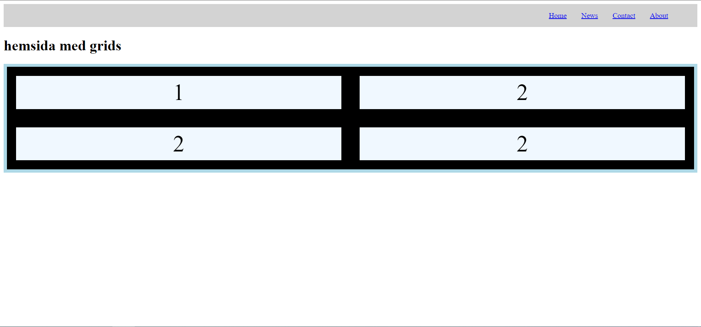
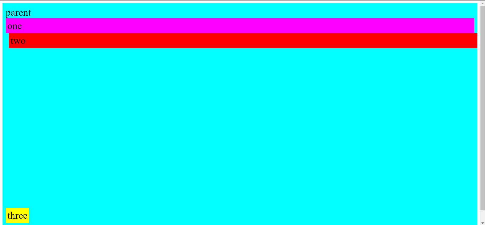
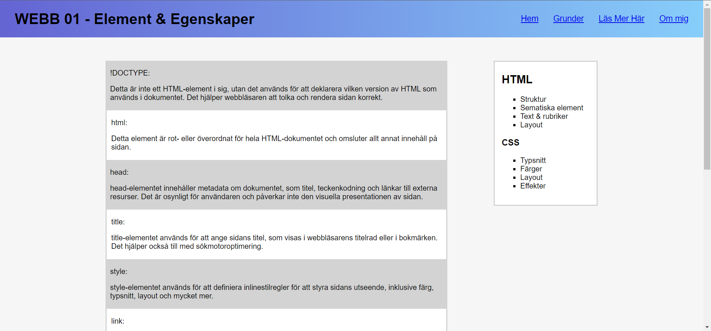

Första uppgiften i webutv
Vi går igenom några grunder i HTML/CSS och hur man använder Live Server, Github och W3C validator för HTML och för CSS. Jag vill att ni laddar upp alla uppgifter och projekt på GitHub.
Andra uppgiften i webutv
Vi går igenom hur man lägger in bilder och vad man ska tänka på kring bilder på nätet.
Tredje uppgiften i webutv
Vi går igenom div i mer detalj och hur man använder flex och grid i CSS.
Femte uppgiften i webutv
Vi lär oss om positioner som static, relative, fixed, absolute och sticky
Sjätte uppgiften i webutv
I denna uppgift ska du öva på både ny och gammal HTML & CSS. Försök att använda samtliga element och egenskaper i listan nedan åtminstone en gång i din portfolio. Därefter härmar du webbsidan
